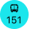
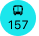

Eastbound
- Randolph/Harbor Dr
- Every 20 minutes
- Navy Pier
- Every 10 minutes
Northbound
- 
- Devon/Clark
- Every 16 minutes
Southbound
-

- 103rd/Stoney Island
- Every 15 minutes
- 103rd/Stoney Island
- Every 15 minutes
Reroute
- Jackson Park Express
- N/A
Out of Service
- Cottage Grove
- Resumes at 12:10am
- Madison
- Resumes at 12:10am
- 
- Streeterville/Taylor
- Resumes at 6:00am